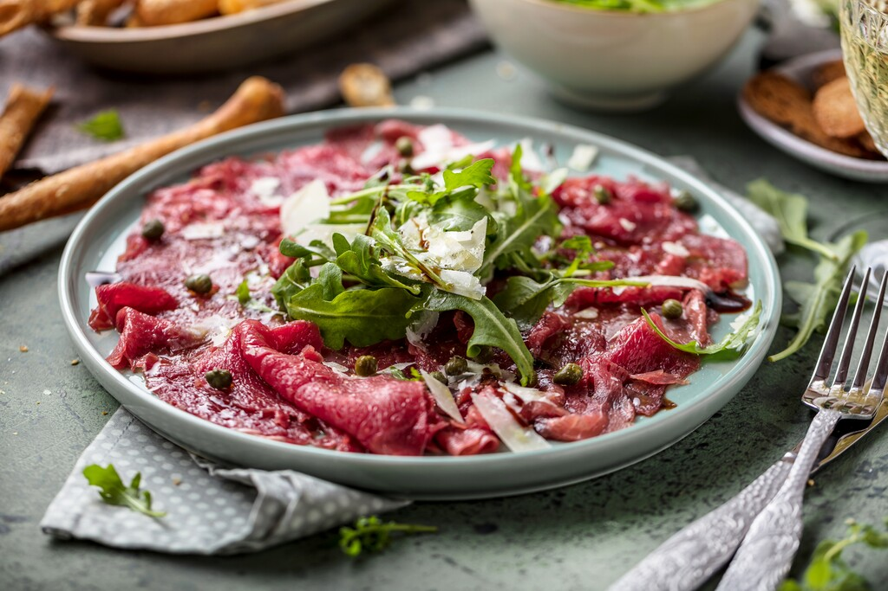

Carpaccio
Dit elegante voorgerecht is perfect voor een feestelijke maaltijd of een speciale gelegenheid.
Ingrediënten
- 200 gram rauwe ossenhaas
- 50 gram rucola
- 100 gram Parmezaanse kaas
- 50 ml olijfolie
- 1 limoen
- peper en zout naar smaak
Bereidingswijze
- Snijd de ossenhaas in dunne plakjes. Leg de plakjes op een grote schaal en besprenkel ze met olijfolie.
- Rasp de Parmezaanse kaas over de plakjes ossenhaas.
- Verdeel de rucola over de plakjes ossenhaas en besprenkel deze met nog wat extra olijfolie.
- Pers de limoen uit en verdeel de limoensap over de carpaccio.
- Breng op smaak met peper en zout en serveer direct.

Tip
Voor een extra smaakboost kun je truffelolie gebruiken in plaats van reguliere olijfolie.